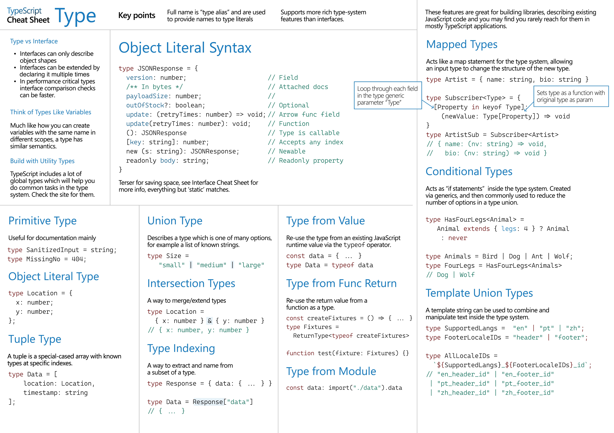
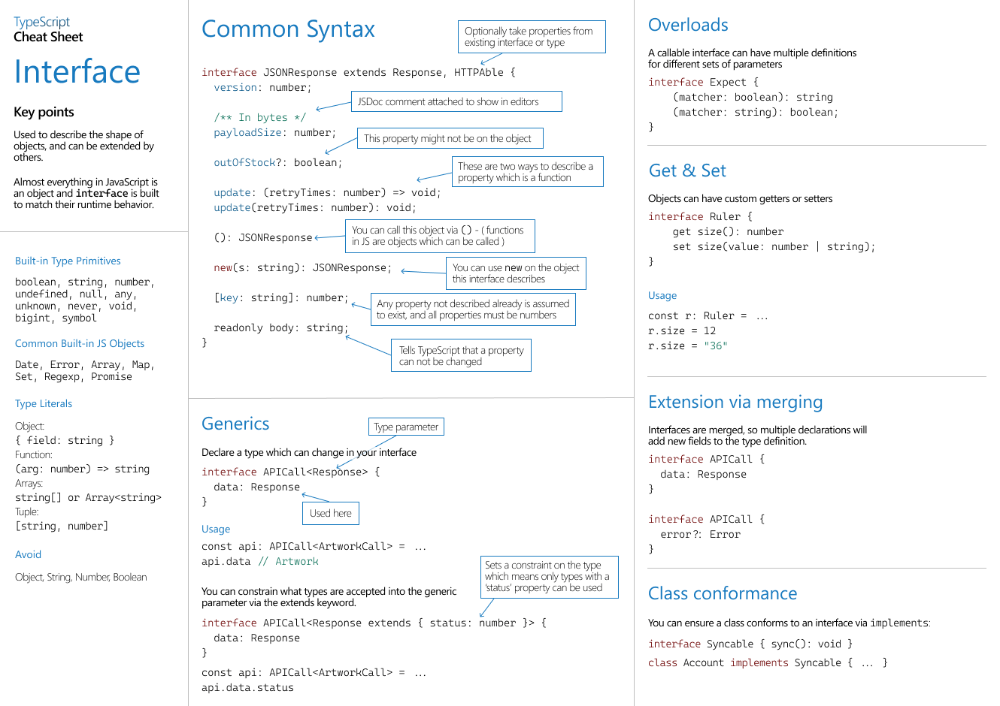
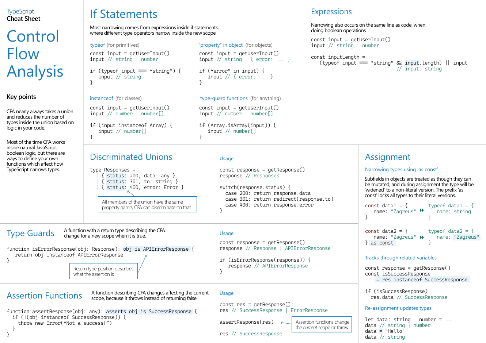
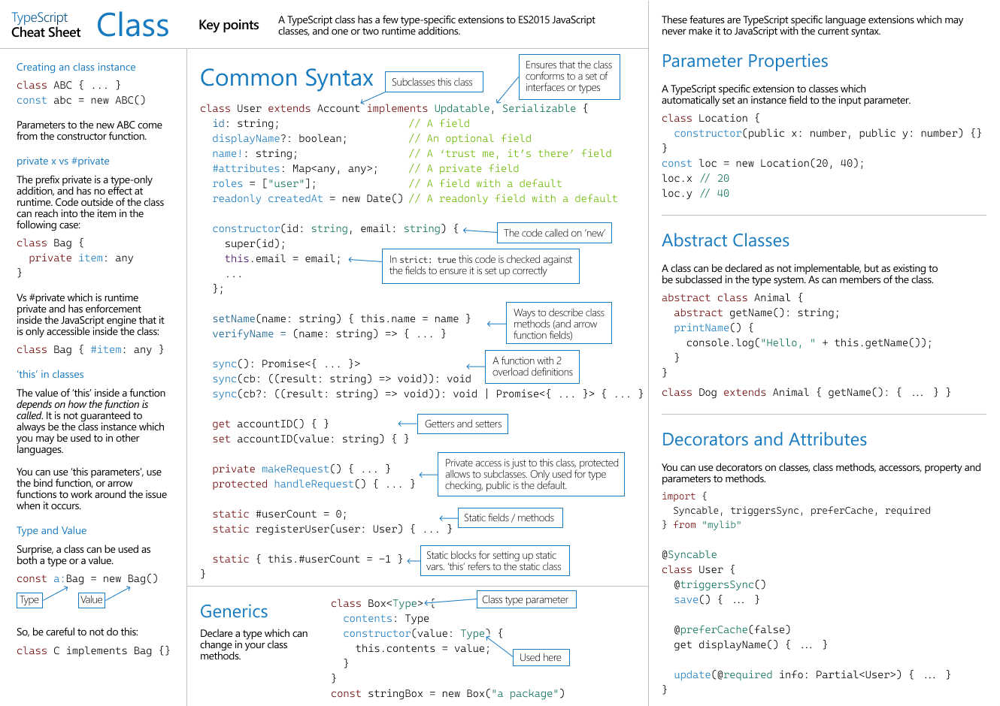

TypeScript Cheat Sheet
TypeScript cheat sheet, for quick reference only.
Quick Reference
Type
Interface
Control Flow Analysis
Class
Basics
/**
* Primitive types.
*/
const name: string = 'Jason Yu'
const age: number = 30
const hasMarried: boolean = true
const colors : string[] = ['red', 'blue']
/**
* Using `any` disables all further type checking, and it is assumed you know the environmen better than TypeScript.
* Avoid this by "noImplicitAny".
*/
const obj: any = { x: 0 }
const foo = () : number => 1
const bar = async () : Promise<string> => "string"
/**
* Object types.
*/
const printCoord = (pt: { x : number, y: number }) => { console.log(pt.x, pt.y) }
const printName = (obj : { first: string, last?: string }) => { console.log(obj.first, obj.last) } // Checking for optional arg is needed.
const printId = (id: number | string) => { console.log(id) } // Union type, need a runtime check with "typeof".
/**
* Type aliases - reusable types, cannot be changed after being created.
*/
type Point = {
x: number;
y: number;
}
type ID = number | string;
/**
* Interfaces - extendable way to name object types.
*/
interface Point {
x: number;
y: number;
}
interface Point { // Add more fields to the existing type.
z: number;
}
const pt : Point = { x: 1, y: 2, z: 3 }
/**
* Type assertions - similar to value (down/up) cast.
*/
// EventTarget <- Node <- Element <- HTMLElement <- HTMLCanvasElement.
const canvasEle = document.getElementById("canvas") as HTMLCanvasElement;
// Double assertion.
const resizeObserver = (window as unknown as Record<string, unknown>)['ResizeObserver']
/**
* Literal types.
*/
const printText = (s: string, alignment: "left" | "right" | "center") => {} // Combining literals into unions.
const compare = (a: string, b: string) : -1 | 0 | 1 => a === b ? 0 : a > b ? 1 : -1
declare function handleRequest(url: string, method: "GET" | "POST"): void
const reqA = { url: "https://hangyu.site", method: "GET" as "GET" } // Type assertion to always literal type.
const reqB = { url: "https://hangyu.site", method: "GET" } as const // Convert the entire object to be type literals.
handleRequest(reqA.url, reqA.method)
const liveDangerously = (x?: number | null) => { console.log(x!.toFixed()) } // Remove "null" and "undefined" from a specific type.
Type Narrowing
// "typeof" narrowing.
const padLeft = (padding: number | string, input: string) => {
if (typeof padding === "number") return " ".repeat(padding) + input
return padding + input
}
// Truthiness narrowing.
const printAll = (strs: string | string[] | null) => {
if (strs && typeof strs === "object") { // string[].
for (const s of strs) { console.log(s) }
} else if (typeof strs === "string") { // string.
console.log(strs)
}
}
// Type predicates - user-defined type guard.
const isFish = (pet: Fish | Bird): pet is Fish => { // The return type is a type predicate.
return (pet as Fish).swim !== undefined; // Narrowing the given argument to a specific type.
}
// Assertion functions.
interface Circle {
kind: 'circle'; // Literal type.
radius: number;
}
interface Square {
kind: 'square';
sideLength: number;
}
type Shape = Circle | Square; // A discriminated union, tags are recognized by their literal types.
const getArea = (shape: Shape) => {
switch (shape.kind) {
case "circle":
return Math.PI * shape.radius ** 2
case "square":
return shape.sideLength ** 2
default:
const _exhaustiveCheck: never = shape // "shape" is the type of "never" here.
return _exhaustiveCheck
}
}
More on Functions
type GreetFunction = (msg: string) => void // Function type.
const greeter: GreetFunction = (msg: string) => { console.log(msg) } // The parameter name in the type is required.
// Call signature in an object type.
type DescribableFn = {
description: string; // Other properties.
(arg: number): boolean;
}
const myFn: DescribableFn = (arg: number) => arg > 3
myFn.description = "fn description."
// Construct signature (for function call).
interface Obj { // The shape of Obj.
value: string;
id?: string;
}
class Name implements Obj { // One of the specific implementation.
value: string
constructor(s: string) { this.value = s }
}
type CallConstruct = {
new (s: string): Obj; // The return type should be stick to the shape.
}
((Ctor: CallConstruct) => new Ctor("Jason"))(Name)
// Generic functions (type parameters are for relating the types of multiple values).
function sum<Type>(arr: Type[]): number {
return arr.reduce((prev, num) => prev += parseInt(num as string), 0)
}
function longest<Type extends { length: number }>(a: Type, b: Type) { // Constrain the type parameters.
return a.length > b.length ? a : b
}
function combine<Type>(arrA: Type[], arrB: Type[]): Type[] {
return arrA.concat(arrB)
}
const arr = combine<string | number>([1, 2, 3], ["hello"])
function myForEach(arr: any[], callback: (arg: any, index: number) => void) {
for (let i = 0; i < arr.length; i++) {
callback(arr[i], i)
}
}
myForEach([1, 2, 3], (a) => console.log(a)) // Functions with fewer parameters (of the same types) can always take the place of functions with more parameters.
myForEach([1, 2, 3], (a, i) => console.log(a, i))
// Function overloads.
function makeDate(timestamp: number): Date // Overload signatures.
function makeDate(m: number, d: number, y: number): Date // Overload signatures.
function makeDate(mOrTimestamp: number, d?: number, y?: number): Date { // Implementation signatures, which should be compatible with the overload signatures.
if (d !== undefined && y !== undefined) {
return new Date(y, mOrTimestamp, d)
} else {
return new Date(mOrTimestamp)
}
}
// "unknown" which is the type-safe counterpart of any.
// Anything is assignable to unknown, but unknown isn't assignable to anything -
// but itself and any without a type assertion or a control flow based narrowing. -
// Likewise, no operations are permitted on an unknown without first asserting or -
// narrowing to a more specific type.
function safeParse(s: string): unknown {
return JSON.parse(s)
}
function fail(msg: string): never {
throw new Error(msg)
}
function multiply(n: number, ...m: number[]) { // Rest parameter.
return m.map((x) => n * x)
}
const args = [8, 5] as const // TS doesn't assume that arrays are immutable, so using type literals here.
const angle = Math.atan2(...args)
// Parameter destructuring.
function sum({ x, y, z }: { x: number; y: number; z: number }) {
console.log(x + y + z)
}
type voidFuncType = () => void
const fn: voidFuncType = () => true // Valid, fn returns "more" information than type of "voidFunc".
const cbVoid = (cb: voidFuncType) => cb()
cbVoid(() => true) // Valid, same as above.
const literalFn = function(): void { // For literal void function, it must not return anything.
// @ts-expect-error
return true
}
Object Types
interface Type {
readonly prop: string // Readonly properties.
}
interface StrObjType {
[index: string]: string | undefined // When a StringArray is indexed with a string, it may return a string.
field: string
optFiled?: string
}
const strObj: StrObjType = { field: "hello", }
// Without the index signature, object literal may only specify known properties.
interface SquareConfig {
// [propName: string]: any;
color?: string
width?: number
}
const square: SquareConfig = { color: "red", width: 100, }
// Extending types.
interface BasicAddr {
name?: string
street: string
city: string
country: string
postalCode: string
}
interface AddressWithUnit extends BasicAddr {
unit: string
}
// Interaction types.
interface Colorful {
color: string
}
interface Circle {
radius: number
}
type ColorfulCircle = Colorful & Circle
const circle: ColorfulCircle = { color: "blue", radius: 42 }
// Generic object types.
interface Box<Type> {
contents: Type
}
// type Box<Type> = { contents: Type }
const box: Box<string> = { contents: "box" }
type NumBox = Box<number> // Reuse generic types.
type OrNull<Type> = Type | null
type OneOrMany<Type> = Type | Type[]
type OneOrManyOrNull<Type> = OrNull<OneOrMany<Type>>
type OneOrManyOrNullStrings = OneOrManyOrNull<string>
// The "ReadonlyArray" type.
// Assignability isn’t bidirectional between regular Arrays and ReadonlyArrays.
function doStuff(values: ReadonlyArray<string>) {} // "values" cannot be changed.
// function doStuff(values: readonly string[]) {}
// Tuple types - another sort of Array type that knows exactly -
// how many elements it contains, and exactly which types it contains at specific positions.
type StringNumberPair = [string, number]
type Either2dOr3d = [number, number, number?] // Optional tuple elements can only come at the end.
type StringNumberBooleans = [string, number, ...boolean[]] // Tuple with rest elements.
function readButtonInput(...args: StringNumberBooleans) {
const [name, version, ...input] = args
}
// Read-only tupl - tuples tend to be created and left un-modified in most code.
const point = [3, 4] as const
function distanceFromOrigin([x, y]: readonly [number, number]) {
return Math.sqrt(x ** 2 + y ** 2)
}
distanceFromOrigin(point)
Type Manipulation
// Generic call signature.
interface GenericIdentityFn {
<Type>(arg: Type): Type
}
function identity<Type>(arg: Type): Type { return arg }
const myIdentity: GenericIdentityFn = identity
// Generic constraints.
interface Lengthwise {
length: number
}
function loggingIdentity<Type extends Lengthwise>(arg: Type) { return arg.length }
function getProperty<Type, Key extends keyof Type>(obj: Type, key: Key) { return obj[key] }
function create<Type>(c: { new (): Type }): Type { return new c() } // Generic consturct signature.
// Generic with default types.
type Container<T, U> = {
element: T
children: U
}
declare function create<T extends HTMLElement = HTMLDivElement, U = T[]>(
element?: T,
children?: U
): Container<T, U>
// "keyof" type operator.
type Point = { x: number, y: number }
type P = keyof Point // "x" | "y".
// "typeof" type operator - only available on identifiers.
function fn() {
return { x: 10, y: 3 }
}
type P = ReturnType<tyepof fn>
// ^? type P = { x: number; y: number; }
// Indexded access types.
type Person = { age: number, name: string, alive: boolean }
type Age = Person['age']
type I1 = Person['age' | 'name']
type I2 = Person[keyof Person]
const MyArray = [
{ name: 'Jason', age: 20 },
{ name: 'Bob', age: 20 }
]
type ArrayPerson = typeof MyArray[number]
type ArrayAge = typeof MyArray[number]['age'] // Index with type literal "age".
// Conditional types.
interface IdLabel {
id: number
}
interface NameLabel {
name: string
}
type NameOrId<T extends number | string> = T extends number ? IdLabel : NameLabel
function createLabel<T extends number | string>(idOrName: T): NameOrId<T> {}
// "infer" keyword.
type GetReturnType<Type> = Type extends (...args: never[]) => infer Return ? Return : never
// Distributive conditional types.
type ToArray<Type> = Type extends any ? Type[] : never
type StrArrOrNumArr = ToArray<string | number> // string[] | number[].
type ToArrayNonDist<Type> = [Type] extends [any] ? Type[] : never
type ArrOfStrOrNum = ToArrayNonDist<string | number> // (string | number)[].
// Mapped types.
type OptionsFlags<Type> = {
[Property in keyof Type]: boolean
}
type Features = {
darkMode: () => void
newUserProfile: () => void
}
// Take all the properties from "Features" and change their values to be a boolean.
type FeatureOptions = OptionsFlags<Features>
type CreateMutable<Type> = {
-readonly [Property in keyof Type]: Type[Property] // Remove "readonly".
}
type Concrete<Type> = {
[Property in keyof Type]-?: Type[Property] // Remove "optional".
}
// Key remapping.
type Getters<Type> = {
[Property in keyof Type as `get${Capitalize<string & Property>}`]: () => Type[Property]
}
// Filter out keys.
type RemoveKindField<Type> = {
[Property in keyof Type as Exclude<Property, "kind">]: Type[Property]
}
type EventConfig<Events extends { kind: string }> = {
[E in Events as E["kind"]]: (event: E) => void
}
type SquareEvent = { kind: "square", x: number, y: number }
type Config = EventConfig<SquareEvent>
type ExtractPII<Type> = {
[Property in keyof Type]: Type[Property] extends { pii: true } ? true : false
}
// Template literal types.
type World = "world"
type Greeting = `hello ${World}`
type EmailLocaleIDs = "welcome_email" | "email_heading"
type FooterLocaleIDs = "footer_title" | "footer_sendoff"
type AllLocaleIDs = `${EmailLocaleIDs | FooterLocaleIDs}_id`
type Lang = "en" | "ja" | "pt"
// For each interpolated position in the template literal, the unions are cross multiplied.
type LocaleMessageIDs = `${Lang}_${AllLocaleIDs}`
// Defining a new string based on information inside a type.
type PropEventSource<Type> = {
on<Key extends string & keyof Type>
(eventName: `${Key}Changed`, callback: (newValue: Type[Key]) => void): void
}
declare function makeWatchedObject<Type>(obj: Type): Type & PropEventSource<Type>
// Intrinsic string manipulation types.
type ShoutyGreeting = Uppercase<Greeting> // Converts each character in the string to the uppercase version.
type QuietGreeting = Lowercase<Greeting> // Converts each character in the string to the lowercase version.
type CapitalizeGreeting = Capitalize<Greeting> // Converts the string to the cpitalized version.
type UncapitalizeGreeting = Uncapitalize<Greeting> // Converts the string to the uncpitalized version.
Classes
class OKGreeter {
name!: string // Not initialized, but no error.
}
class Greeter {
readonly name: string = "world" // This field can only be changed within construtor.
}
// Class heritage.
interface Pingable {
pint(): void
}
class Sonar implements Pingable {
pint() {}
}
Modules
// ES module syntax.
// @filename: animal.ts
export type Cat = { breed: string }
export interface Dog {
breeds: string[]
}
// @filename: app.ts
import type { Cat, Dog } from './animal.js'
// import { type Cat, type Dog, ... } from './animal.js' // Inline type imports.
type Animals = Cat | Dog
评论 | Comments